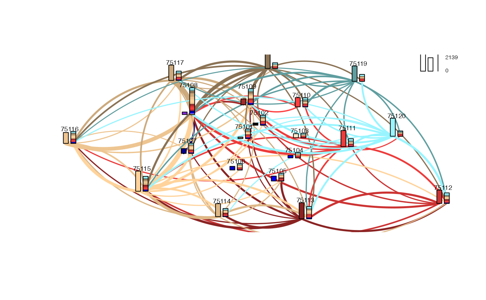

The graphic combines a graphical representation of origin-destination flows with bar charts that represent the total inflow and outflow per site. By default only the largest 25% of flows are shown.
map_flows( y, index_o, index_d, coords_s, color_palette = sample(colors(), size = nrow(coords_s)), add = FALSE, max_lwd = 1, filter_lowest = 0.75, max_bar = 1, legend_position = "none", decimal_points = 0, add_labels = FALSE, remove_intra = FALSE )
| y | A numeric vector of flows |
|---|---|
| index_o | A factor/character vector of origin ids (should be the same length as y) |
| index_d | A factor/character vector of destination ids (should be the same length as y) |
| coords_s | A matrix or data.frame, containing coordinates for each (unique) origin and
destination in |
| color_palette | A character vector of colors. Should have the same length and ordering as
the coordinates in |
| add | A logical, controlling whether a new graphic window may be opened |
| max_lwd | A numeric, indicating the value of the maximum width for the lines connecting the origins with the destinations |
| filter_lowest | A numeric, that gives the value of the highest quantile to represent
(e.g.: if |
| max_bar | A numeric, indicating the height of the largest bar-chart shown |
| legend_position | A character, indicating the legend position. Should be one of
|
| decimal_points | A numeric, indicating the number of decimal points shown in in the legend |
| add_labels | A logical, controlling whether the site names should be printed |
| remove_intra | A logical that sets the intra flow to null values |
Creates a graphical representation of origin-destination flows
#>data("paris10km_commuteflows") data("paris10km_municipalities") # use only the 20 central aggrandisements of Paris two_letters <- function(x, var) substr(x[[var]], 1 , 2) paris_arron_commuteflows <- paris10km_commuteflows[ two_letters(paris10km_commuteflows, "ID_DEST") == "75" & two_letters(paris10km_commuteflows, "ID_ORIG") == "75",] paris_aggrandisements <- paris10km_municipalities[ two_letters(paris10km_municipalities, "ID_MUN") == "75" ,] # create the matrix with the coordinates coords_xy <- st_coordinates(st_centroid(paris_aggrandisements))#> Warning: st_centroid assumes attributes are constant over geometries of xrownames(coords_xy) <- paris_aggrandisements[["ID_MUN"]] map_flows(paris_arron_commuteflows[, "COMMUTE_FLOW"], paris_arron_commuteflows[, "ID_ORIG"], paris_arron_commuteflows[, "ID_DEST"], coords_s = coords_xy, legend_position = "topright", color_palette = colors(distinct = TRUE)[20:41], add_labels = TRUE, remove_intra = TRUE)